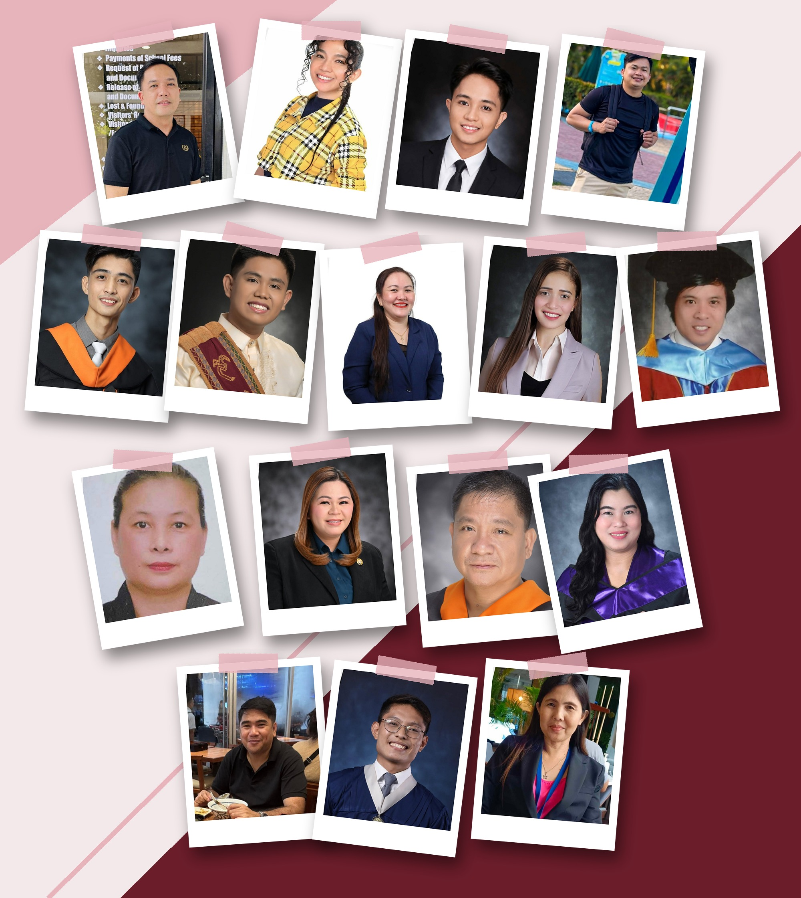

Bachelor of Science in Information Technology | Technology and Engineering College for Humanity
Meet the people behind every lesson
Behind every BSIT student is a team of dedicated educators who guide them from their first line of code to their final capstone project. Led by the Dean of the Technology and Engineering College for Humanity, our faculty brings together professors, engineers and IT professionals who share their knowledge in programming, networking, databases and systems design. More than teaching inside the classroom, they mentor students through seminars, competitions and real-world projects, shaping them into skilled and responsible IT professionals ready for an ever-changing digital world.
